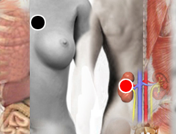

Amnesia
Par
corazón - riñón
hipófisis - suprarrenales
occipital - timo
temporal (I)- hipocampo

Generalidades:
Amnesia es un trastorno en la función de la memoria.
La amnesia puede ser orgánica, es decir por motivos fisiológicos como lesión, enfermedad o abuso de drogas.
La amnesia funcional se da como un mecanismo de defensa de tipo psicológico.
La amnesia también puede ser transitoria, espontánea o selectiva. Cuando la pérdida de la memoria se debe al deterioro del cerebro, puede tratarse de Alzheimer y puede formar parte de la demencia senil.